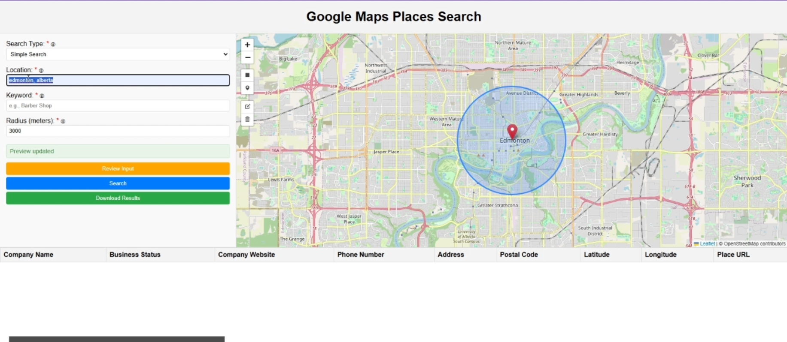
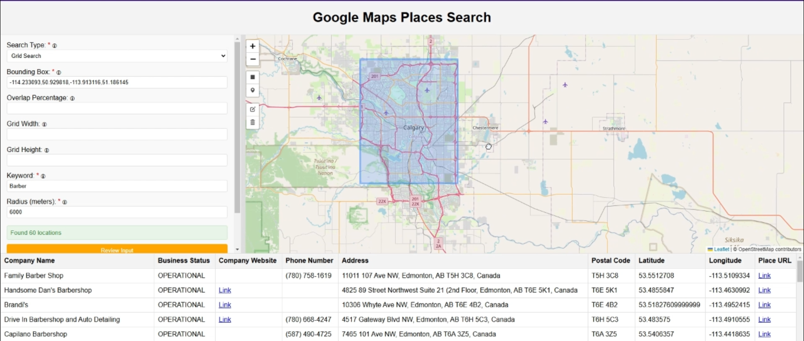
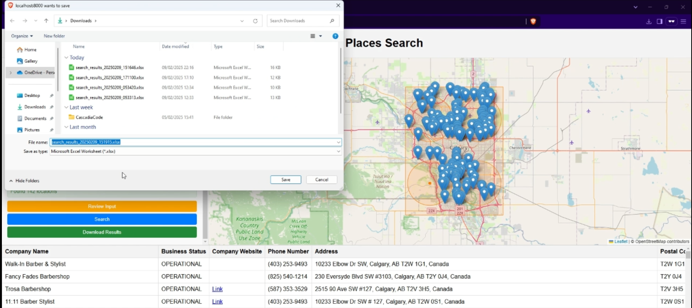
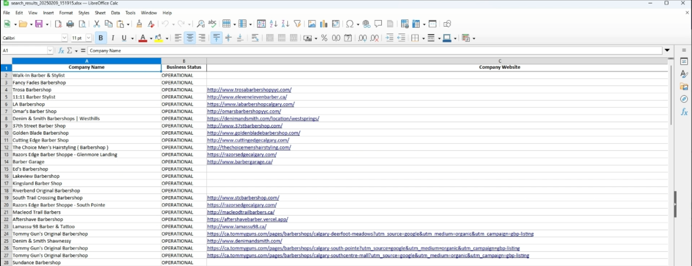

Capability Overview




Choose between simple location-based searches or comprehensive grid-based area coverage for maximum data collection efficiency.
User-friendly web application with real-time map visualization, drawing tools for area selection, and instant search preview capabilities.
Fine-tune search radius, grid dimensions, overlap percentages, and coverage areas to match your specific business intelligence needs.
Export comprehensive business data to Excel spreadsheets or GeoJSON files with complete contact information, addresses, and geographic coordinates.
FastAPI-powered backend with RESTful endpoints, batch processing capabilities, and scalable architecture for high-volume data collection.
Intelligent grid-based searching with automatic dimension calculation, overlap control, and comprehensive area coverage to ensure no businesses are missed.
Business Value
🎯 Lead Generation
Systematically discover potential customers in specific geographic areas with complete contact information and business details for targeted outreach campaigns.
📊 Market Research
Analyze competitor density, market saturation, and business distribution patterns across different locations to inform strategic expansion decisions.
🗺️ Location Intelligence
Leverage geographic business data for site selection, territory planning, and understanding local market dynamics with precise coordinate mapping.
⚡ Operational Efficiency
Replace manual business directory research with automated data collection, reducing research time from days to minutes while ensuring data accuracy.
📈 Sales Territory Optimization
Map sales territories with comprehensive business listings, enabling sales teams to maximize coverage and identify untapped opportunities.